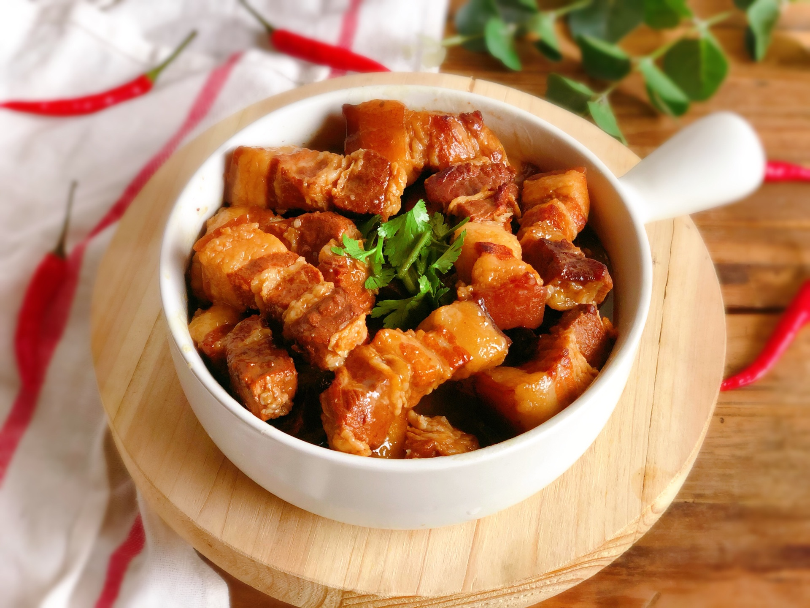
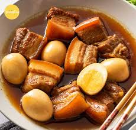
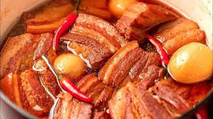

Thịt Kho Tàu là món ăn truyền thống, biểu tượng của ẩm thực Việt Nam,
đặc biệt là trong những dịp lễ Tết. Món ăn này nổi bật với những miếng
thịt ba chỉ (hoặc thịt chân giò) được kho mềm rục, béo ngậy, thấm đẫm
gia vị cùng trứng vịt (hoặc trứng gà) có màu nâu cánh gián đẹp mắt.
Hương vị đậm đà, mặn ngọt hài hòa của Thịt Kho Tàu mang đến cảm giác ấm
cúng, sum vầy cho mỗi bữa cơm gia đình.



Nguyên liệu
Thịt ba chỉ (hoặc thịt chân giò): 500g (chọn loại có
cả nạc và mỡ xen kẽ để thịt mềm và không bị khô).
Trứng vịt (hoặc trứng gà): 4-6 quả (trứng vịt thường
được dùng để món ăn truyền thống hơn, trứng gà cũng ngon).
Hành tím: 1 củ lớn, bóc vỏ, băm nhỏ.
Tỏi: 2-3 tép, bóc vỏ, băm nhỏ.
Nước mắm ngon: 3-4 muỗng canh (chọn loại nước mắm có
độ đạm cao để món ăn thơm ngon hơn).
Nước màu (nước hàng): 1-2 muỗng canh (tự làm hoặc mua
sẵn, giúp thịt có màu cánh gián đẹp).
Đường: 2-3 muỗng canh (để ướp và nêm nếm, điều chỉnh
độ ngọt).
Tiêu xay: 1/2 muỗng cà phê (hoặc nhiều hơn nếu thích
cay).
Nước dừa tươi: 500ml - 1 lít (tùy chọn, nước dừa giúp
thịt mềm nhanh, ngọt thanh và thơm hơn. Nếu không có, có thể dùng nước
lọc).
Dầu ăn: 1 muỗng canh (để xào thịt).
Hành lá, ớt tươi: Để trang trí (tùy chọn).
Cách làm
Bước 1: Sơ chế thịt
Thịt ba chỉ rửa sạch, cạo sạch lông (nếu có). Cắt thịt thành miếng
vuông vừa ăn (khoảng 3-4 cm).
Chần sơ thịt qua nước sôi khoảng 5-7 phút để loại bỏ bọt bẩn và
mùi hôi. Vớt thịt ra, rửa sạch lại dưới vòi nước lạnh và để ráo.
Bước 2: Ướp thịt
Cho thịt đã sơ chế vào tô lớn. Thêm hành tím băm, tỏi băm, 3-4
muỗng canh nước mắm, 2-3 muỗng canh đường, 1-2 muỗng canh nước màu
và 1/2 muỗng cà phê tiêu xay.
Trộn đều tất cả các nguyên liệu. Dùng tay bóp nhẹ để thịt thấm gia
vị.
Ướp thịt ít nhất 30 phút ở nhiệt độ phòng, hoặc tốt nhất là 1-2
tiếng (hoặc qua đêm trong tủ lạnh) để thịt ngấm đều gia vị.
Bước 3: Luộc và chiên trứng (tùy chọn)
Luộc chín trứng vịt (hoặc trứng gà). Bóc vỏ.
Để trứng có màu vàng đẹp và dai hơn, bạn có thể cho trứng đã bóc
vỏ vào chảo với một ít dầu ăn, chiên sơ qua cho trứng hơi vàng đều
các mặt.
Bước 4: Kho thịt
Đặt nồi lên bếp, cho 1 muỗng canh dầu ăn vào đun nóng.
Cho thịt đã ướp vào nồi, xào sơ trên lửa vừa cho thịt săn lại và
hơi xém cạnh. Việc này giúp thịt thơm hơn và giữ được hình dạng
khi kho.
Đổ nước dừa tươi (hoặc nước lọc) vào nồi, sao cho nước xâm xấp mặt
thịt.
Đun sôi nồi thịt. Khi nước sôi, hạ nhỏ lửa nhất, đậy nắp và kho
liu riu.
Kho khoảng 45-60 phút cho thịt bắt đầu mềm. Sau đó, cho trứng đã
luộc (và chiên sơ) vào kho cùng.
Tiếp tục kho thêm khoảng 30-60 phút nữa (tổng thời gian kho khoảng
1.5 - 2 tiếng) cho đến khi thịt mềm rục, nước kho sánh lại và có
màu cánh gián đẹp mắt. Trong quá trình kho, thỉnh thoảng kiểm tra
và nêm nếm lại gia vị cho vừa ăn. Nếu nước cạn quá, có thể thêm
một chút nước nóng.
Bước 5: Hoàn thiện và thưởng thức
Khi thịt đã mềm rục và nước kho sánh lại, tắt bếp.
Gắp thịt và trứng ra đĩa. Rưới phần nước kho đậm đà lên trên.
Có thể trang trí thêm với hành lá thái nhỏ hoặc vài lát ớt tươi
tỉa hoa để món ăn thêm phần hấp dẫn.
Thịt Kho Tàu ngon nhất khi dùng nóng với cơm trắng, dưa giá hoặc
dưa chuột muối chua.
Mẹo nhỏ để Thịt Kho Tàu ngon hơn:
Chọn thịt: Thịt ba chỉ có tỷ lệ nạc mỡ cân bằng sẽ
cho món kho ngon nhất, mềm béo mà không bị ngán.
Sơ chế thịt: Chần thịt qua nước sôi giúp loại bỏ
tạp chất và mùi hôi, làm thịt sạch và thơm hơn.
Ướp thịt: Ướp thịt đủ thời gian giúp thịt thấm đều
gia vị, khi kho sẽ đậm đà hơn.
Nước màu: Nước màu là yếu tố quan trọng tạo nên màu
sắc đặc trưng cho món kho. Bạn có thể tự làm nước màu bằng cách đun
đường với một ít nước cho đến khi đường chuyển màu cánh gián.
Nước dừa tươi: Sử dụng nước dừa tươi sẽ giúp thịt
mềm nhanh hơn, có vị ngọt thanh tự nhiên và hương thơm đặc trưng.
Thời gian kho: Kho thịt trên lửa nhỏ liu riu trong
thời gian dài là bí quyết để thịt mềm rục, thấm vị và có màu sắc
đẹp.
Trứng: Chiên sơ trứng trước khi kho giúp trứng dai
hơn và không bị nát khi kho lâu.
Bảo quản: Thịt Kho Tàu có thể bảo quản trong tủ
lạnh và hâm nóng lại nhiều lần, càng hâm lại càng ngon và thấm vị.
Bình luận và Đánh giá
Đánh giá của bạn
Chưa có bình luận nào.